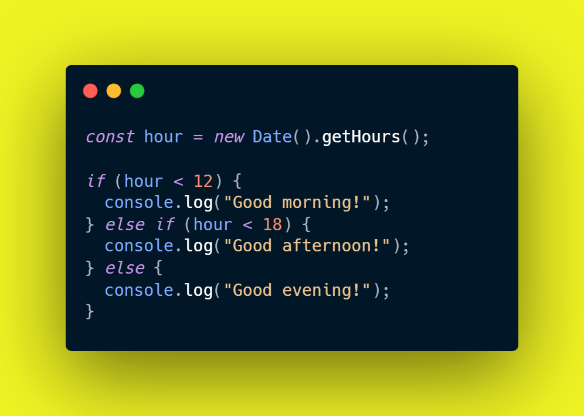

Pildi järgi on antud tavaline Javascripti if, else if, else kood mis näitab, milline näeb välja tavaline if, else if, else kood. See on väga kasulik, kui me tahame, et meie kood annaks eraldi vastuse olenevalt väärtusest.
Kuidas see töötab? kõige pealt, me teeme väärtuse kasutades const. Siis me paneme väärtusele nime. Pildil on pandud nimeks "hour" ja see on võrdne new Date().getHours();. See tähendab, et see võtab oma väärtuse praegusest kella ajast (0-23).
If, ehk kui "hour" on väiksem kui 12, siis kuvatakse sõnum "Good morning!". Else if, ehk kui "hour" on suurem või võrdne 12, siis kuvatakse sõnum "Good afternoon!". Else, ehk kui "hour" on suurem või võrdne 18, siis kuvatakse sõnum "Good evening!". Else if saab lisada nii palju juurde, kui soovib.